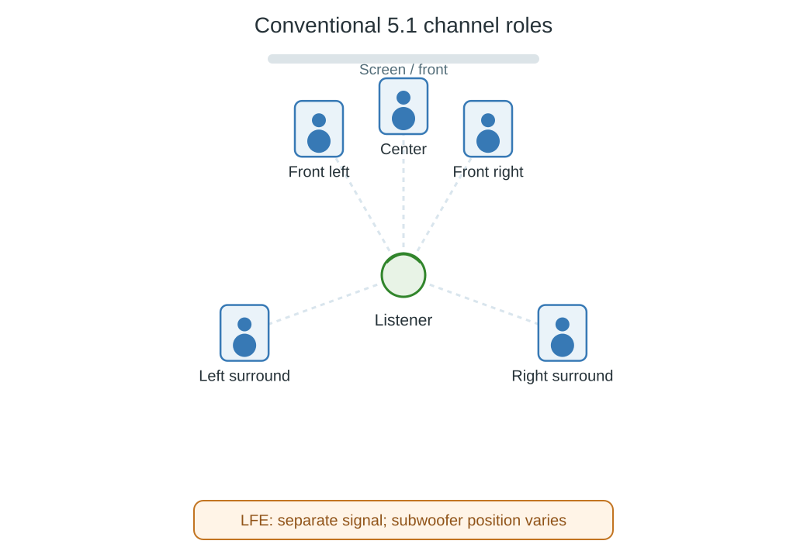

5.1 Surround Sound
5.1 surround sound carries five main channels plus a low-frequency-effects channel. The conventional layout places three channels at the front and two around the sides or rear of the listener.

Schematic top view of the conventional 5.1 layout. Speaker positions are illustrative; the LFE label identifies a signal, not a prescribed subwoofer location.
| Channel | Role in the layout |
|---|---|
| Left and right | Front soundstage and panned front sounds |
| Center | Stable front-center position, often used for dialogue |
| Left surround and right surround | Side/rear effects and ambience |
| LFE | Separate low-frequency effects signal |
The “.1” describes the LFE's limited frequency range, not one tenth of a normal channel's loudness. There are six signals altogether. The main channels can contain bass too; LFE is not the complete bass content of the soundtrack.
ITU-R BS.775 gives a reference arrangement with the front left and right at ±30 degrees and surrounds in sectors 100–120 degrees from front center. Actual installations should follow the system's placement guidance and the room's constraints.
What the label leaves open
5.1 describes a layout, not a codec. Compressed and uncompressed formats can carry it. It also does not promise that the output system will reproduce six independent signals: a stereo destination needs an appropriate combined presentation.
When playing a 5.1 track through Emby, distinguish the source channel layout from the player's final output. A subwoofer can receive redirected bass even from a stereo source, while a 5.1 source can play without a physical subwoofer if the system routes bass appropriately. The number of physical bass speakers is therefore not a reliable way to identify the source track.